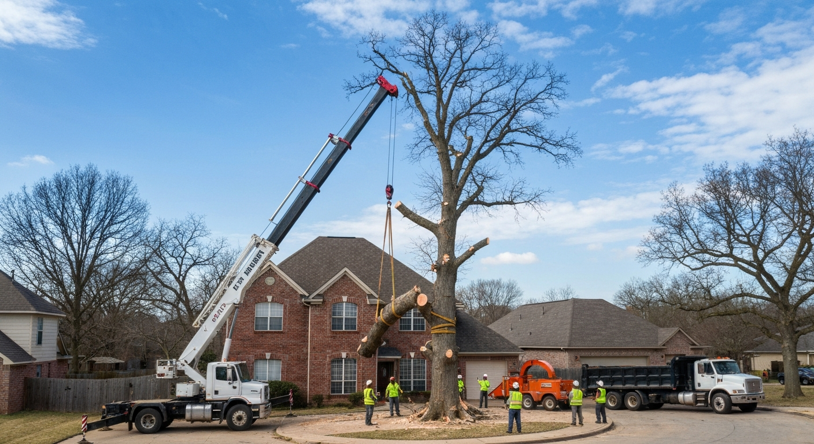
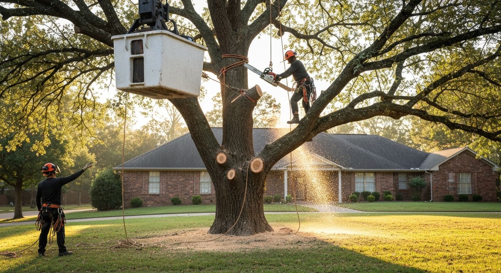
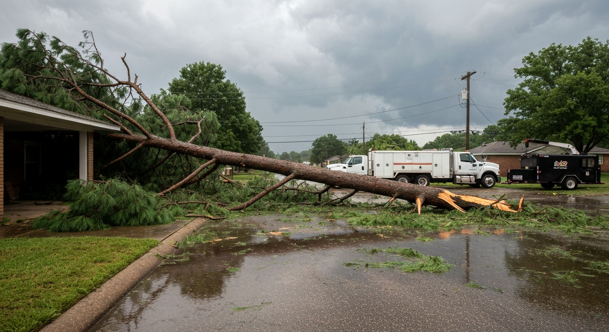
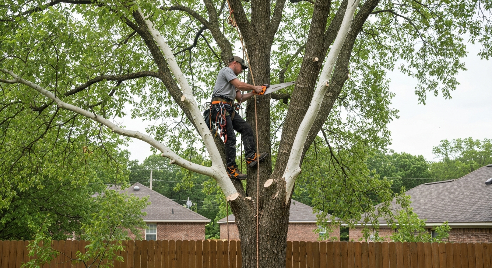
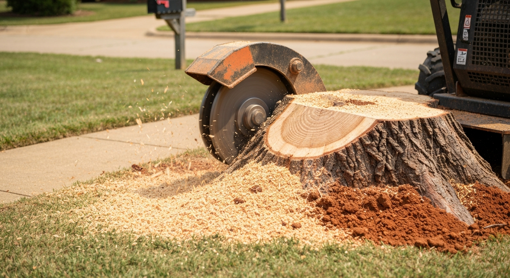
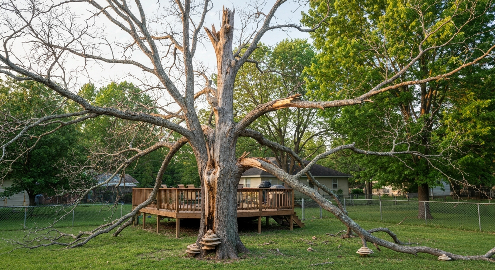
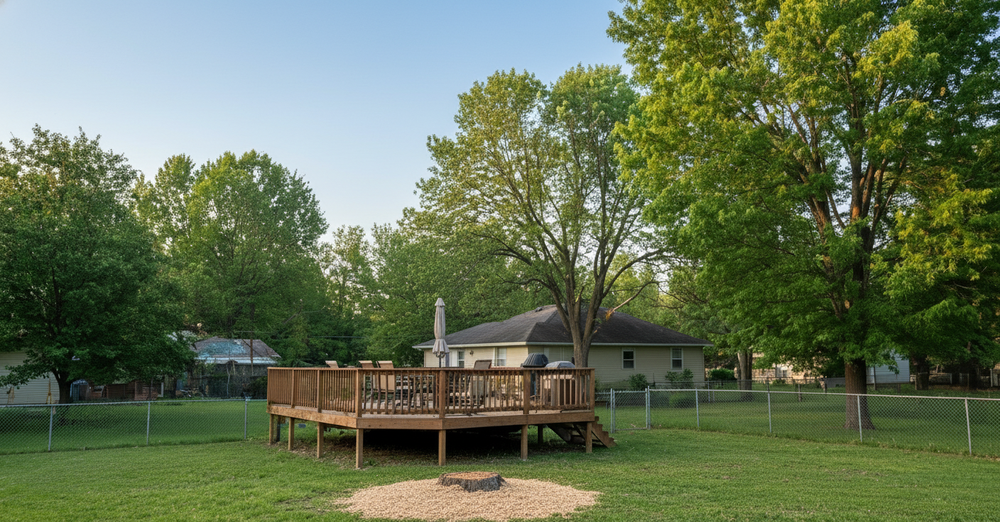
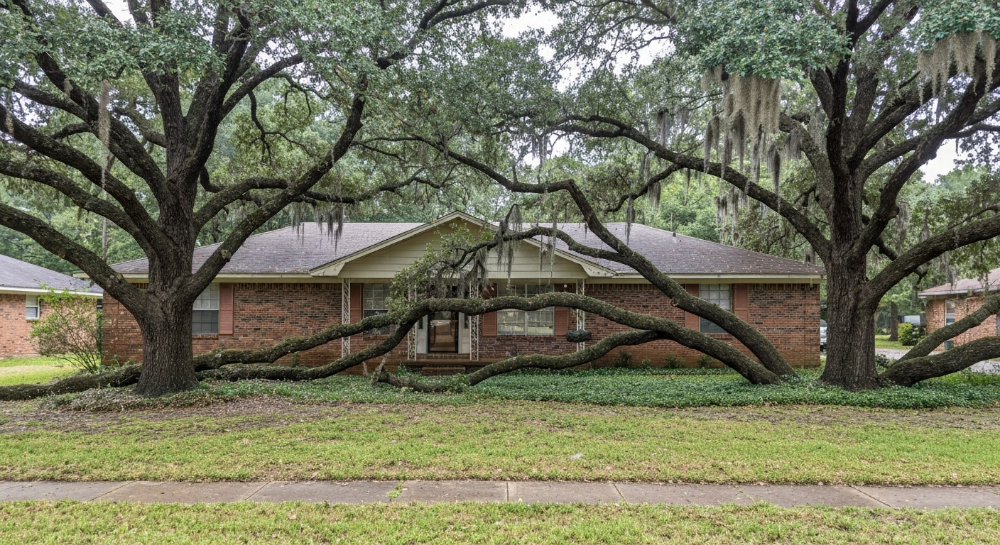
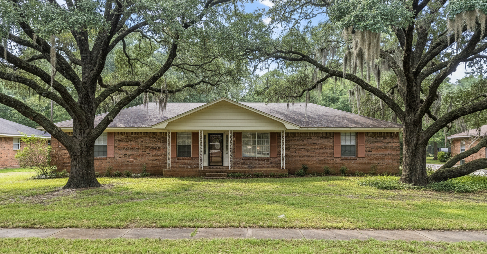

Jonesboro's Trusted Tree Service Experts
Licensed Arborists Serving Jonesboro, AR & Surrounding Communities. Tree removal, trimming, stump grinding & 24/7 emergency response.
Licensed Arborists Serving Jonesboro, AR & Surrounding Communities. Tree removal, trimming, stump grinding & 24/7 emergency response.
From routine trimming to emergency storm response, Jonesboro Tree Pros provides comprehensive tree care for residential and commercial properties across Craighead County.
Safe, efficient removal of dead, diseased, or hazardous trees of all sizes. Includes full cleanup and haul-away.
$400–$2,500 Learn MoreShape, thin, and prune trees for health, clearance, and curb appeal. Crown reduction and canopy lifting available.
$200–$800 Learn More24/7 emergency response for storm damage, fallen trees, and urgent hazards. We answer the phone when it matters most.
$500–$3,000 Learn MoreComplete stump removal below grade using professional grinding equipment. Reclaim your yard.
$150–$500 Learn MoreISA-certified arborist evaluation for disease, pest damage, structural risk, and long-term health planning.
$100–$300 Learn MoreFull lot and acreage clearing for construction, farming, or landscape renovation. Timber handling included.
$1,000–$10,000 Learn MoreWe're not a franchise or a fly-by-night crew. Jonesboro Tree Pros is locally owned, fully licensed, and staffed by ISA-certified arborists who know Arkansas trees inside and out.
We carry comprehensive general liability and workers' comp insurance. You're protected from the first phone call to the final cleanup.
Our team holds International Society of Arboriculture certifications. We don't guess — we diagnose, plan, and execute with professional-grade expertise.
Storms don't wait for business hours and neither do we. When a tree threatens your home or safety, call us any hour of any day.

For over 12 years, Jonesboro Tree Pros has served homeowners, businesses, and municipalities throughout Craighead County and Northeast Arkansas. We started as a two-person crew with a single truck and a commitment to doing honest work at fair prices.
Today we run a full fleet of cranes, chippers, and stump grinders — but our approach hasn't changed. Every job gets an ISA-certified arborist on-site, a transparent quote with no hidden fees, and a crew that treats your property like their own.
About Our CompanyReal reviews from real homeowners across Northeast Arkansas.
"A huge oak fell on my fence during the storm. Called Jonesboro Tree Pros at 11pm and they had a crew out by 7am. Unbelievable response time. Fence was cleared before I had to go to work. These guys are the real deal."
"Had three overgrown pecans that were dropping limbs on my car every windstorm. They came out, gave me a fair quote, and the crew was professional and cleaned up every bit of debris. Highly recommend to anyone in the area."
"Had four stumps from trees we removed years ago. They ground them all down in under two hours. Fair price, showed up on time, didn't leave a mess. Will use again for trimming this fall."
Serving Jonesboro and communities throughout Northeast Arkansas within a 100-mile radius.
Photos from real jobs across Jonesboro and Northeast Arkansas.








Quick answers about our tree services in Jonesboro, AR.